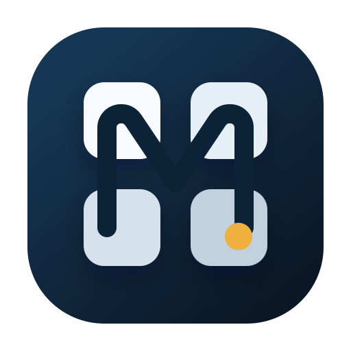

01. Page Mark
一番素直な本命案です。文書ページを前面に出して、中央の M と右下のノードで 「Markdown + knowledge base」を表現しています。
Marketplace Mock
白背景の一覧で見える実際の余白感
Confluence の「整理された知識空間」寄りにしつつ、Atlassian の既存ブランドはなぞらない方向の
3 案です。まずは ページ感、構造感、知識ベース感 のどれが
近いかを見るための試作です。
一番素直な本命案です。文書ページを前面に出して、中央の M と右下のノードで 「Markdown + knowledge base」を表現しています。
複数のページや階層を見せる案です。Confluence っぽい「情報を積む場所」感は強いですが、 ややプロダクトロゴ寄りの見え方になります。

情報の整理棚や wiki の構造を感じさせる案です。拡張の block editor 性は出ますが、 小さいサイズでは少し込み入って見えるかもしれません。